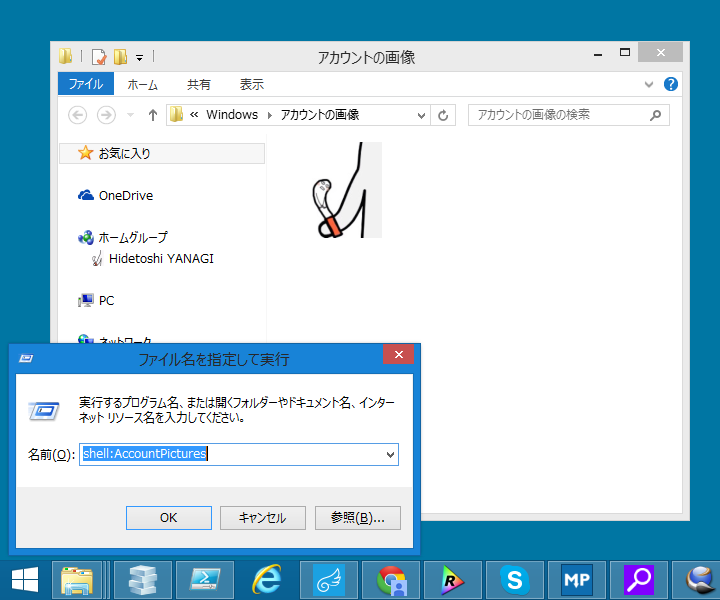

Windows のあのフォルダーをサクッと開きたい！ 覚えておくとちょっと便利なシェルコマンド
公開日：

ちょっと覚えておくと便利なシェルコマンドの一覧。たとえば［Windows］＋［R］キーで「ファイルを指名して実行」を開いて、著ちょいと入力してエンターを押すと目当てのフォルダーへサクッとアクセスできる。OS起動時に実行開始するアプリを登録する“shell:Startup”辺りは割と使うかな？
| shell:AccountPictures | “アカウントの画像”フォルダー |
| shell:AddNewProgramsFolder | 「コントロール パネル」の“プログラムの取得” |
| shell:Administrative Tools | “プログラム\管理ツール”フォルダー |
| shell:AppData | C:\Users\ |
| shell:Application Shortcuts | \AppData\Local\Microsoft\Windows \Application Shortcuts |
| shell:AppsFolder | モダンアプリを集めた仮想フォルダー“Applications” |
| shell:AppUpdatesFolder | 「コントロール パネル」の“インストールされた更新プログラム” |
| shell:Cache | 「Internet Explorer」のキャッシュフォルダー |
| shell:Camera Roll | |
| shell:CD Burning | CDを焼くときに使う“一時書き込みフォルダー” |
| shell:ChangeRemoveProgramsFolder | 「コントロール パネル」の“プログラムと機能” |
| shell:Common Administrative Tools | “プログラム\管理ツール”フォルダー（すべてのユーザー） |
| shell:Common AppData | C:\ProgramData |
| shell:Common Desktop | “デスクトップ”（すべてのユーザー） |
| shell:Common Documents | “ドキュメント”（すべてのユーザー） |
| shell:Common Programs | “スタート メニュー\プログラム”（すべてのユーザー） |
| shell:Common Start Menu | “スタート メニュー”（すべてのユーザー） |
| shell:Common Startup | “スタートアップ”（すべてのユーザー） |
| shell:Common Templates | “Templates”（すべてのユーザー） |
| shell:CommonDownloads | “ダウンロード”（すべてのユーザー） |
| shell:CommonMusic | “ミュージック”（すべてのユーザー） |
| shell:CommonPictures | “ピクチャー”（すべてのユーザー） |
| shell:CommonRingtones | “Ringtones”（すべてのユーザー） |
| shell:CommonVideo | “ビデオ”（すべてのユーザー） |
| shell:ConflictFolder | 「コントロール パネル」の“競合” |
| shell:ConnectionsFolder | 「コントロール パネル」の“ネットワーク接続” |
| shell:Contacts | “アドレス帳” |
| shell:ControlPanelFolder | 「コントロール パネル」の“すべてのコントロール パネル項目” |
| shell:Cookies | 「Internet Explorer」のCookieフォルダー |
| shell:CredentialManager | \AppData\Roaming\Microsoft\Credentials |
| shell:CryptoKeys | \AppData\Roaming\Microsoft\Crypto |
| shell:CSCFolder | |
| shell:Desktop | “デスクトップ” |
| shell:Device Metadata Store | C:\ProgramData\Microsoft\ Windows \DeviceMetadataStore |
| shell:DocumentsLibrary | “ドキュメント”ライブラリ |
| shell:Downloads | “ダウンロード” |
| shell:DpapiKeys | >\AppData\Roaming\Microsoft\Protect |
| shell:Favorites | “お気に入り” |
| shell:Fonts | C:\Windows\Fonts |
| shell:Games | “ゲーム” |
| shell:GameTasks | \AppData\Local\Microsoft\Windows \GameExplorer |
| shell:History | \AppData\Local\Microsoft\Windows\History |
| shell:HomeGroupCurrentUserFolder | The Home Group folder for the current user |
| shell:HomeGroupFolder | The Home Group root folder |
| shell:ImplicitAppShortcuts | \AppData\Roaming\Microsoft\Internet Explorer\Quick Launch\User Pinned\ImplicitAppShortcuts |
| shell:InternetFolder | 「Internet Explorer」の起動 |
| shell:Libraries | ライブラリ |
| shell:Links | “リンク”（「エクスプローラー」のナビゲーションペインに表示される） |
| shell:Local AppData | C:\Users\ |
| shell:LocalAppDataLow | C:\Users\ |
| shell:LocalizedResourcesDir | |
| shell:MAPIFolder | 「Microsoft Outlook」のフォルダーらしい（入れてないから知らん） |
| shell:MusicLibrary | “ミュージック”ライブラリ |
| shell:My Music | “ミュージック”フォルダー |
| shell:My Pictures | “ピクチャー”フォルダー |
| shell:My Video | “ビデオ”フォルダー |
| shell:MyComputerFolder | “PC” |
| shell:NetHood | \AppData\Roaming\Microsoft\Windows \Network Shortcuts |
| shell:NetworkPlacesFolder | “ネットワーク” |
| shell:OEM Links | |
| shell:Original Images | |
| shell:Personal | “ドキュメント”フォルダー |
| shell:PhotoAlbums | |
| shell:PicturesLibrary | “ピクチャー”ライブラリ |
| shell:Playlists | |
| shell:PrintersFolder | \AppData\Roaming\Microsoft\Windows \Printer Shortcuts |
| shell:PrintHood | \AppData\Roaming\Microsoft\Windows \Printer Shortcuts |
| shell:Profile | ユーザーフォルダー |
| shell:ProgramFiles | C:\Program Files |
| shell:ProgramFilesCommon | C:\Program Files\Common Files |
| shell:ProgramFilesCommonX64 | C:\Program Files\Common Files |
| shell:ProgramFilesCommonX86 | C:\Program Files (x86)\Common Files |
| shell:ProgramFilesX64 | C:\Program Files |
| shell:ProgramFilesX86 | C:\Program Files (x86) |
| shell:Programs | \AppData\Roaming\Microsoft\Windows \Start Menu\Programs |
| shell:Public | C:\Users\Public |
| shell:PublicAccountPictures | C:\Users\Public\AccountPictures |
| shell:PublicGameTasks | C:\ProgramData\Microsoft\Windows \GameExplorer |
| shell:PublicLibraries | C:\Users\Public\Libraries |
| shell:Quick Launch | >\AppData\Roaming\Microsoft\Internet Explorer\Quick Launch |
| shell:Recent | “最近使った項目” |
| shell:RecordedTVLibrary | |
| shell:RecycleBinFolder | “ごみ箱” |
| shell:ResourceDir | C:\Windows\Resources（Windows テーマの保存場所） |
| shell:Ringtones | \AppData\Local\Microsoft\Windows \Ringtones |
| shell:Roamed Tile Images | |
| shell:Roaming Tiles | \AppData\Local\Microsoft\Windows \RoamingTiles |
| shell:SavedGames | “保存したゲーム” |
| shell:Screenshots | ［Windows］＋［Print Screen］キーで撮影したスクリーンショットの保存先 |
| shell:Searches | “検索” |
| shell:SearchHistoryFolder | \AppData\Local\Microsoft\Windows \ConnectedSearch\History |
| shell:SearchHomeFolder | “検索結果” |
| shell:SearchTemplatesFolder | |
| shell:SendTo | “送る”メニューに表示されるショートカットを保存するフォルダー |
| shell:SkyDrive | 現在は shell:OneDrive。当然ながら“OneDrive”フォルダーを表示 |
| shell:SkyDriveCameraRoll | |
| shell:SkyDriveDocuments | |
| shell:SkyDrivePictures | |
| shell:Start Menu | \AppData\Roaming\Microsoft\Windows \Start Menu |
| shell:Startup | “スタートアップ” |
| shell:SyncCenterFolder | |
| shell:SyncResultsFolder | 「コントロール パネル」の“同期結果” |
| shell:SyncSetupFolder | 「コントロール パネル」の“同期のセットアップ” |
| shell:System | C:\Windows\System32 |
| shell:SystemCertificates | \AppData\Roaming\Microsoft \SystemCertificates |
| shell:SystemX86 | C:\Windows\SysWOW64 |
| shell:Templates | \AppData\Roaming\Microsoft\Windows \Templates |
| shell:ThisPCDesktopFolder | “デスクトップ” |
| shell:User Pinned | \AppData\Roaming\Microsoft\Internet Explorer\Quick Launch\User Pinned |
| shell:UserProfiles | C:\Users |
| shell:UserProgramFiles | \AppData\Local\Programs |
| shell:UserProgramFilesCommon | \AppData\Local\Programs\Common |
| shell:UsersFilesFolder | ユーザーフォルダー |
| shell:UsersLibrariesFolder | ライブラリ |
| shell:VideosLibrary | “ビデオ”ライブラリ |
| shell:Windows | C:\Windows |
ここに挙げたのは Windows 8.1 世代のモノなので、Windows 10 では追加や廃止があるかも。
単語の間に空白があったりなかったりと命名規則が統一されていないのは Microsoft らしいなぁ、と思います。